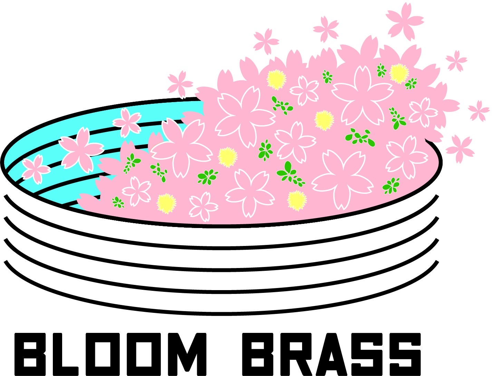
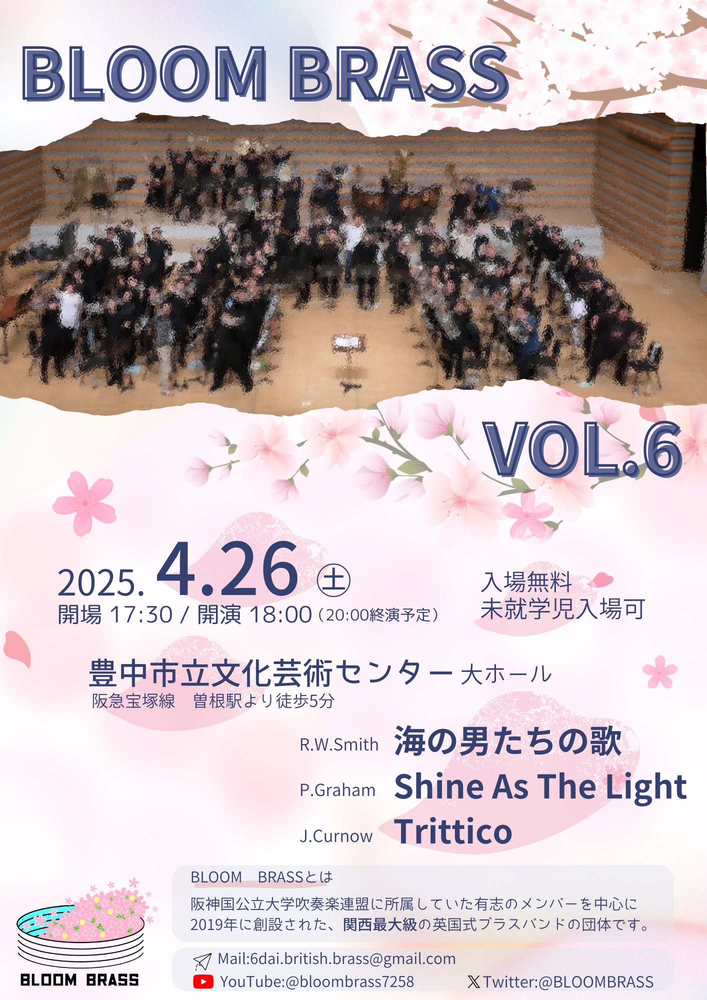
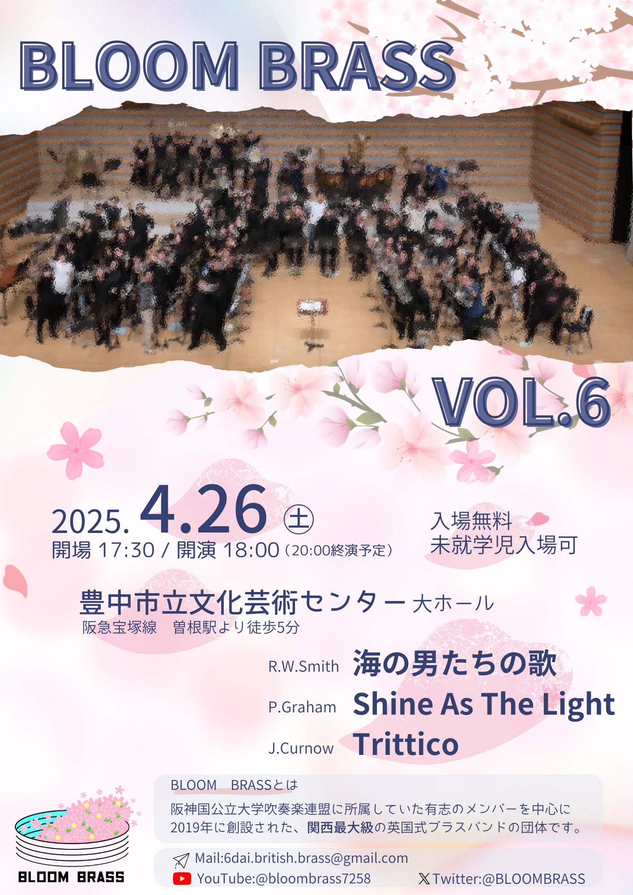

BLOOM BRASSは、関西で活動する公募型英国式ブラスバンドです。
毎年秋に一般奏者募集を行い、翌年春に演奏会を実施しています。
毎年秋に一般奏者募集を行い、翌年春に演奏会を実施しています。
最新情報はTwitterをご確認ください。
❀最新Topic
・第6回演奏会開催決定！

❀次回演奏会:第6回演奏会
日時： 2025年4月26日(土) 17:30 start
場所： 大阪府豊中市立文化芸術センター 大ホール
曲目：
- Trittico/James Curnow ほか
❀更新情報